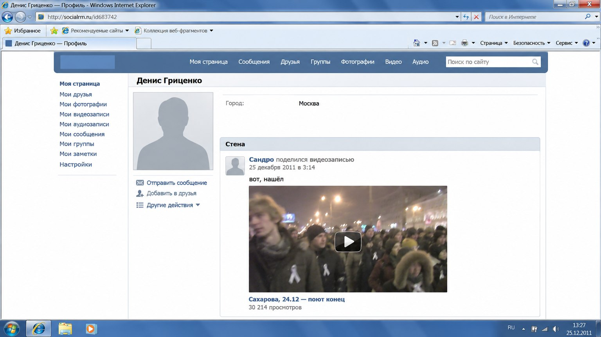

Денис. Москва, декабрь 2011

Светало теперь в десятом часу. В конце октября часы назад не перевели, первый раз на Денисовой памяти, и с тех пор утро в Москве начиналось в темноте и долго в ней стояло: в восемь во дворе горели фонари, в девять горели фонари, и только к десяти над гаражами проступало небо, низкое, серое, и фонари гасли, когда на них уже никто не смотрел. Мама сказала по телефону, что у них в Нижнекамске то же самое, что на смену идёшь ночью и со смены ночью, и что по радио обещают, что привыкнут.
Четвёртого декабря, в воскресенье, он вышел за хлебом в начале десятого, и было ещё темно, и шёл дождь, мелкий, тёплый, плюс два, какой бывает не в декабре, а в конце марта. Снег, выпавший в ноябре, сошёл за два дня, и у гаражей стояли лужи, в которых плавали жёлтые листья, так и не убранные с осени.
Школа за гаражами, та, куда ходил Сандро, горела вся, все три этажа, как горит только на выпускной или на выборы. Над крыльцом висели два флага, трёхцветные, мокрые, а на дверях плакат, синий, с галочкой в квадратике. Из открытой двери, из колонки в фойе, шла музыка, эстрада, бодрая, с барабанной машинкой, которая стучала ровно, как метроном, и под неё по мокрым ступенькам поднимались люди с зонтами, больше пожилые, по двое, и женщины держали мужей под руку, как держат на кладбище. У крыльца стоял полицейский, в старом милицейском бушлате, и только на рукаве у него было уже другое слово, новое, с весны, и Денис каждый раз, когда видел это слово на старом бушлате, читал его, как читают чужую фамилию на своём почтовом ящике.
Голосовать Денису было негде. Прописка у него оставалась в Нижнекамске, у мамы, в Москве была только временная, по бумаге Вероники Павловны, в Люблине, где он ни разу не был, а за открепительным он не ходил и не думал ходить. Он постоял у забора, потому что из фойе пахло пирожками.
Под козырьком крыльца стоял Сандро с двумя приятелями, в куртках нараспашку, без шапок, и все трое ели пирожки из бумажек. Сандро за этот год перерос Дениса. Над верхней губой у него темнело, будто туда мазнули углём и не стёрли, и, когда он крикнул «здрасте», голос у него на середине слова сорвался вниз, в бас, и вернулся, и приятели засмеялись, и Сандро ткнул одного кулаком в плечо.
— Там буфет, — сказал Сандро, подойдя к забору. — С капустой по десять. С повидлом по двенадцать. Мы третий раз ходим. — Он подумал. — Вы голосовать?
— Нет.
— И мама нет, — сказал Сандро. Он сказал это легко, жуя. — Говорит, нам не надо. А чего не надо, не говорит.
Он доел и пошёл обратно на крыльцо, к приятелям, и Денис видел, как полицейский у дверей посмотрел на них троих, на Сандро, на его брови, сросшиеся над переносицей, и отвернулся, потому что на крыльцо поднималась старуха с палкой и надо было придержать дверь.
Мама позвонила в обед.
— Мы к восьми, — сказала она, не дожидаясь, пока он спросит. — Всем отделением. Римма Фаритовна в списке галочки ставила, кто пришёл. К девяти все были. Потом по палатам с урной ходили, с переносной, лежачие тоже голосуют. — Она помолчала. — Одна бабушка в седьмой спрашивает: за кого? А ей говорят: за кого хотите. А она говорит: так вы мне скажите, за кого хочу.
— А отец?
— Отец в обед ходил. Сам. — Мама опять помолчала. — Не сказал за кого. Он же не скажет.
— А ты?
— А я как все, — сказала мама и засмеялась, коротко, и Денис не понял, шутит она или нет, и она, кажется, сама не знала. — Ты-то где? Вы сегодня поёте где-нибудь?
— Нигде.
— Ну и сиди, — сказала мама. — Сегодня лучше нигде.
Вечером он включил телевизор. Говорили цифры, проценты, по областям, по округам, и цифры каждый час были другие, а человек с белой бородой, который всем этим заведовал, говорил ровно, медленно, будто читал вслух. Денис слушал не цифры. В сентябре, в «Лужниках», он видел по этому же телевизору, как двое, те самые, в одинаковых чёрных куртках, которые когда-то выходили под музыку из Спасской башни, поменялись местами, просто сказали со сцены, кто куда, и зал встал и хлопал. Он тогда не удивился. Он подумал, что так и было, только раньше не говорили. Сейчас он смотрел на человека с белой бородой и думал, что сегодня тоже ничего не случилось, просто посчитали, и что считали не его. Его не было ни в одном списке: ни в Нижнекамске, где мама сказала бы «не знаю», ни здесь, в школе за гаражами, где пахло пирожками.
Он выключил на областях.
⁂
В понедельник на Пресне Андрей сидел за вторым пультом в наушниках и смотрел не в свой экран, а в Олегов ноутбук, поставленный сбоку, на ящик с кабелями.
Шёл дождь, плюс пять, и в окне у второго пульта Сити стоял мокрый, с огнями в тумане. Олег у первого пульта крутил чужую бочку и делал вид, что не видит, во что смотрит Андрей. Максим сидел на подлокотнике кожаного дивана с телефоном и что-то в нём листал, и лицо у него было такое, будто он сверял накладные.
Андрей снял наушники и протянул Денису, не оборачиваясь.
— Послушай.
На экране было видно спортзал. Не их, не подмосковный с флагами на щитах, а школьный, маленький, с баскетбольным кольцом без сетки и с урной посередине, прозрачной, на столе, и за столом сидели женщины, и снимали это, видно, телефоном, из-за чьего-то плеча, и картинка прыгала. Одна женщина подошла к урне сбоку и опустила в неё что-то, толстое, пачкой, и сразу ещё одну, и в кадре кто-то закричал, мужской голос, высокий: «Что вы делаете? Что вы делаете?» — и женщина обернулась на голос и сказала что-то, чего не было слышно, потому что тот, кто снимал, дышал прямо в телефон. Потом картинка дёрнулась, и стало видно потолок, лампы в сетках, и потом пол.
— Ещё есть, — сказал Андрей. — Много. Ночью выложили.
— Зачем ты это слушаешь?
Андрей посмотрел на него снизу, со своего стула, и Денис увидел, что он и правда слушает, а не смотрит.
— Это не резали, — сказал Андрей. — Целиком. Видишь? С начала до конца, одним куском. Он дышит, и дыхание никто не убрал. Кто-то кашлянул сзади, тоже не убрали. — Он помолчал. — Я такого два года не слышал.
— Ну, целиком, — сказал Олег от первого пульта, не поворачиваясь. — Кому оно надо целиком. Это ж не эфир.
Андрей не ответил. Он забрал у Дениса наушники, надел и нажал на следующий ролик.
— Отец ходил, — сказал Максим с дивана.
Он сказал это никому, в телефон, и Денис не сразу понял, что это Максим говорит про своего.
— Куда?
— На участок. Наблюдателем. — Максим поднял глаза. — Первый раз за двадцать лет. Записался от какой-то партии, по объявлению в интернете, сам, мне не сказал, мама не знала. Сидел до трёх ночи. Сфотографировал протокол на телефон, который я ему на день рождения подарил, он его полгода в коробке держал. — Максим посмотрел на свой телефон, будто там был отцов. — Звонил мне в четыре утра. Говорит: у нас сошлось. А в интернете, говорит, по нашему участку другое. Говорит: я же сам считал.
— И что?
— Ничего, — сказал Максим. — Говорит, теперь знаю, сколько стоит, когда сам считаешь.
Он убрал телефон в карман, встал и пошёл на кухню, и Денис видел, что Максим хотел сказать это смешно, как говорил всё, и не получилось, и он ушёл, пока никто этого не заметил.
Ночью Денис включил ноутбук. Ноутбук был Андреев, старый, тяжёлый, с наклейкой «Харьков» на крышке, полустёртой, и с клавишей пробела, которая западала. Андрей отдал его весной, когда купил себе новый, для работы, и сказал: «Бери, он ещё живой», — и Денис взял, потому что не взять значило объяснять, зачем ему не надо. Интернет ему провёл Сандро, через какую-то флешку, и завёл ему страницу «ВКонтакте», настоящую, с фамилией, без фотографии, «чтобы вы хоть видели, что про вас пишут». Про него писали. Он не читал.
В ту ночь он читал. На Чистых прудах, у метро, вечером, под дождём, был митинг, и пришло больше, чем ждали, несколько тысяч, и потом люди пошли к Лубянке, и по дороге их стали брать. Денис нашёл видео, снятое изнутри автобуса. Это был такой же автобус, с решётками на окнах, как у Рижского рынка в шестом году, и в нём сидели люди, молодые, в куртках, мокрые, и смотрели не прямо перед собой, как смотрели тогда черноволосые мужчины и человек в фартуке, а в телефоны, и снимали друг друга, и смеялись. Девушка у окна снимала через решётку улицу, и в стекле было видно её лицо, освещённое снизу экраном, и она что-то говорила тем, кто будет это смотреть, весело, торопливо, как говорят из поезда, который вот-вот тронется. Денис смотрел на её лицо в стекле и думал, что в шестом году в этот автобус сажали за последние буквы фамилии и что те, кто сидел, знали, что их никто не видит. А эти знали, что видят все. Он не мог решить, что из этого страшнее, и поймал себя на том, что думает теми же словами, что три года назад у Рижского рынка, когда машина стояла, а песня ехала на броне.
Во вторник днём по радио на студийной кухне сказали, что задержанных было около трёхсот и что двоим из тех, кто вёл митинг, дали по пятнадцать суток.
⁂
Во вторник вечером Гоша вёз их по Садовому на корпоратив за Белорусским вокзалом, и на «Маяковской» «Газель» встала.
Стояло всё. Садовое стояло в обе стороны, и Тверская стояла, и по тротуарам, мимо стоящих машин, шли люди, много, молодые, быстро, все в одну сторону, к площади, где за спиной у памятника светился концертный зал. Площадь была обнесена железными заграждениями, и за заграждениями, на ступенях зала, на тротуаре, на газоне, стояли другие, в белых куртках, одинаковых, и у многих на шее висели барабаны.
Денис сидел у окна. Андрей сидел сзади. Максим впереди, рядом с Гошей. Рината в «Газели» не было: на корпоративах стоял сессионный, Олегов, и ехал отдельно, на своей машине.
Барабанов было много. Маленькие, синие, на ремнях, и большие, белые, которые держали двое, и били в них все сразу, и сквозь стекло «Газели» этот бой входил в грудь, как входит бочка в клубе, когда стоишь у колонки. Над боем кричали, хором: «Путин! Россия!» — на два удара, и потом опять. Денис слушал. Он слушал и вспоминал Пекин, квадрат из двух тысяч восьми человек, которые ударили один раз так, что ни один не поторопился и ни один не опоздал. Здесь было не так. Здесь каждый бил сам, кто громче, кто раньше, и удары рассыпались, как горох по полу, и собирались только на крике, на «Путин», а между криками опять рассыпались. Им не нужно было вместе. Им нужно было громко.
— Привезли, — сказал Гоша. Он показал подбородком на автобусы, которые стояли вдоль тротуара дальше, на Тверской, туристические, большие, с занавесками. — Тверские номера. Ярославские. Вон калужский.
— Сколько им платят? — спросил Максим.
— А тебе-то что.
— Интересно, — сказал Максим. — Барабанщикам. По прейскуранту.
С той стороны заграждений, из-за спин полиции, оттуда, где у входа в метро стояли другие, без барабанов, кто-то закричал: «Позор!» Крик был жидкий, человек на двести, и белые куртки ответили на него барабанами, все сразу, громко, и крик пропал.
— Перебили, — сказал Гоша, будто про футбол.
Андрей сзади сказал, глядя в окно:
— Они друг друга не слышат.
Он сказал это не про крик. Денис понял, что Андрей говорит про барабаны, про то, что каждый бьёт сам и не слышит соседа, и что Андрею от этого почти больно, как от гитары, которую не построили. Андрей больше ничего не сказал. «Газель» постояла ещё минут двадцать, а потом их пропустили по Садовому, и бой ещё долго шёл за ними, через стекло, через шум мотора, рассыпанный, как на заводском этаже, где по цехам кто-то колотит по железу и ни один удар не попадает в другой.
На корпоративе страховой компании Денис спел девять песен, в том числе праздничную, и на последней строчке закрыл рот, и сессионный барабанщик закрыл круг на четырёх, ровно, как стояло у него в нотах, и официанты разносили горячее.
⁂
В четверг, восьмого, на лестнице он встретил Сандро с белой ленточкой.
Ленточка была привязана к лямке рюкзака, узкая, атласная, бантиком, и Сандро не прятал её, а шёл с ней с улицы домой, мокрый, и, увидев Дениса, остановился на площадке, как останавливался с мячом пять лет назад, только теперь сверху вниз смотрел он.
— Видели? — спросил Сандро и потрогал ленточку. — У нас полкласса. Мне Дато дал. Он их в канцтоварах купил, моток, и раздаёт.
— Зачем?
— Ну, — сказал Сандро и подумал, как объяснить взрослому. — Чтобы было видно, кто против. Кто за честные. В субботу все идут. На площадь. — Он помолчал. — Вы пойдёте?
— Не знаю.
— А меня мама не пускает, — сказал Сандро. Он сказал это не так легко, как в воскресенье про голосование, а глядя на дверь своей квартиры, внизу, за которой было тихо. — Говорит, нам нельзя. Говорит, если что, нас первых.
Денис ничего не сказал. Он стоял на ступеньку выше и смотрел на Сандровы брови, сросшиеся над переносицей, и на ленточку на лямке, и видел школу за гаражами, только не эту, воскресную, с пирожками, а ту, осеннюю, пять лет назад, куда пришли из милиции и попросили списки, по последним буквам. Нана помнила это лучше него. Она помнила это так, как помнят ожог: не думая, рукой.
— Я ей говорю, мам, сейчас не то, — сказал Сандро. — Сейчас все. Сейчас никто не смотрит, кто ты. А она говорит: всегда то. — Он пожал плечами, длинными, острыми под курткой. — Ленточку сказала снять, когда в школу. Я снимаю. А потом опять.
Он сбежал вниз, к своей двери, и на площадке, перед тем как открыть, снял ленточку с лямки и сунул в карман, и Денис видел, как он это сделал, быстро, не глядя, как прячут сигарету.
Вечером в пятницу, возвращаясь, Денис увидел ленточку на антенне.
Серая «десятка» стояла у гаражей там же, где стояла все эти годы, и на антенне у неё, как каждый год с мая, висела оранжево-чёрная, повязанная весной, к Девятому, выгоревшая за лето, вымокшая за осень. Прежнюю, восьмого года, хозяин сменил давно, а эту повязал в мае и, видно, тоже не собирался снимать до следующего. А под ней, ниже, у самого основания антенны, кто-то повязал белую. Свежую, атласную, бантиком, той же ширины, что у Сандро на лямке. Обе висели на одном пруте, одна над другой, и фонарь над гаражами светил на них одинаково, и мокли они одинаково, и Денис постоял у «десятки» и посмотрел на них, на две ленточки, которые ничего друг про друга не знали, и пошёл домой.
Утром, в субботу, белой не было. Её срезали. На пруте остался узелок, маленький, тугой, и от него вниз висел короткий хвостик, срезанный наискосок, ножом. Оранжево-чёрная висела, где висела.
⁂
Он никому не сказал.
Он не решал, что не скажет. Когда-то, на Фонтанке, у арки, он так же говорил, что пойдёт другой дорогой, и не говорил какой, и Максим отвечал «ну, иди», и никто не спрашивал. Сейчас и говорить было некому. В субботу у него в листе ничего не стояло, Гоша не писал, Эдик в выходные не звонил никогда, а Андрей с Максимом, если и шли, то ему об этом не сказали, и он не спрашивал. Он оделся, как одевался на улицу, в куртку и в шапку, и взял варежки, серые, с косичкой, Настины, бабушкиной вязки, которые носил десятую зиму. На правой большой палец протёрся, и Денис зашил его сам, чёрной ниткой, потому что серой не было, и шов вышел толстый, как шрам. Он посмотрел на шов и положил варежки в карман.
Ехал он по своей ветке, до «Третьяковской», без пересадок, и в вагоне было много таких, кто ехал туда же. Это было видно сразу, хотя никто ничего не говорил. Они были его возраста, больше, младше, в хороших куртках, в шапках с помпонами, в очках, с детьми, с термосами в рюкзаках, и у многих на куртках, на сумках, на рукавах было белое: ленточка, кусок бинта, у одного мужчины белый шарф, у девушки напротив белая роза, бумажная, приколотая булавкой. Они смотрели друг на друга и улыбались, коротко, как улыбаются в поезде соседям по купе, которых больше не увидят, и Денис сидел среди них без белого и смотрел в пол.
Наверху шёл мокрый снег. Было около нуля, и снег не ложился, а таял на лету и садился на плечи водой. Люди шли от метро в одну сторону, по Лаврушинскому, мимо Третьяковки, плотно, но не толкаясь, и Денис пошёл с ними. На углу, у набережной, стояла женщина в длинном пальто, немолодая, с катушкой белой ленты в одной руке и с ножницами в другой, и отрезала каждому, кто протягивал руку, кусок с ладонь длиной, и говорила: «Пожалуйста». Денис не протянул. Она сама отрезала и протянула ему.
— Пожалуйста.
Он взял.
— Повяжите, — сказала женщина. — Тут, на рукав.
— Потом, — сказал Денис.
Она кивнула, будто так и надо, и отрезала следующему, и Денис пошёл дальше, держа ленточку в кулаке, и через десять шагов положил её в карман, к варежкам.
У пешеходного моста через канал стояли железные рамки, как в аэропорту, и полиция, много, в шлемах, в бронежилетах поверх бушлатов, и смотрела сумки, и пропускала по одному. Очередь стояла недолго. Полицейский, молодой, с усталым лицом, посмотрел на Дениса, на его пустые руки, на плечо, где не было гитары, и махнул: проходи. Никто не сказал ему «документики». Денис прошёл рамку, и она не запищала, и он вдруг понял, что ждал, что запищит, как ждал пять лет назад «пройдём» у автобуса с решётками, и что ждать было нечего, потому что сегодня здесь никто не смотрел на фамилии.
На мосту стояли железные деревья, на которых молодожёны вешают замки, и замки висели на них гроздьями, мокрые, ржавые, разноцветные, а на ветках, между замками, сидели люди, мальчишки, повыше, чтобы видеть, и кричали вниз тем, кто внизу, что там, впереди, творится. Впереди творилось много. Площадь за мостом была полная от края до края, и сквер на ней, и набережная за сквером, и над всем этим стоял пар от дыхания, белый, и шары, белые, надувные, и на одном шаре, который проплыл у Дениса над головой, было написано чёрным маркером, что владельца надули. Над площадью, низко, шёл вертолёт, и его было слышно, а потом не слышно, потому что площадь закричала.
Сцену Денис не видел. Она была где-то впереди, на набережной, у реки, и между ним и ею стояли тысячи затылков в шапках, и голос со сцены шёл из колонок, развешанных на столбах, с опозданием, так что одно и то же слово приходило к нему дважды: сначала из ближней колонки, потом из дальней, на полдоли позже. Андрей бы с ума сошёл от этого, подумал Денис и не стал додумывать. Сначала играла группа, которую он не знал, что-то злое и смешное, и вокруг смеялись. Потом говорили. Говорил писатель, фамилию которого Денис помнил по обложкам: книжки с этой фамилией когда-то лежали стопками у Насти на лотке. Говорил журналист, молодой, и читал вслух письмо, написанное в камере тем, кто вёл митинг на Чистых прудах и получил пятнадцать суток. Говорил человек, которого Денис помнил по телевизору ещё с Нижнекамска, с тех лет, когда по воскресеньям вечером отец смотрел передачу, где этот человек ходил по кадру в хорошем пиджаке и рассказывал про неделю так, будто неделя была смешная. Сейчас он говорил серьёзно, медленно, и Денис слушал не слова, а голос, и голос был тот же. Это было странно: что голос из отцова телевизора стоит сейчас здесь, на мокрой набережной, и говорит в колонки, и его слышно на полдоли позже.
Он стоял в толпе и ждал, что его узнают. Он ждал этого, как ждут, что сзади окликнут на улице, когда знают, что окликать некому. Никто не окликнул. Рядом с ним стояли двое, муж с женой, лет пятидесяти, в одинаковых пуховиках, и у жены был термос, и она налила мужу чаю в крышку, и потом, посмотрев на Дениса, на его мокрое лицо, налила ему тоже, в пластмассовый стаканчик, который достала из кармана, и протянула, не спрашивая. Чай был сладкий, с лимоном, горячий.
— Спасибо, — сказал Денис.
— Пейте, — сказала женщина. — Холодно. Вы один?
— Один.
— А мы вот вдвоём, — сказала женщина и засмеялась. — Первый раз в жизни. Он говорит: давай сходим, посмотрим, сколько нас. Я говорю: ну, давай.
Муж ничего не сказал. Он стоял и смотрел вперёд, на затылки, и держал крышку от термоса обеими руками, как держат свечку.
Денис пил чай и думал, что эта женщина сейчас говорит с ним, как говорила бы с любым, кто стоит рядом с мокрым лицом, и что она не знает, кто он, и что это хорошо. Он мог быть любым. Пять лет его узнавали по голосу из чужих телефонов, из ларька с шаурмой, из такси, и всякий раз в этом узнавании была не его песня. Здесь он был никто, мужчина в шапке, один, с пластмассовым стаканчиком, и его посчитали. Его посчитали те, кто стоял у рамок, и те, кто кричал со сцены, и посчитали по-разному. За спиной у него парень говорил в телефон громко, перекрикивая колонки: «По ментам двадцать пять. Двадцать пять, говорю. А со сцены говорят, восемьдесят», — и Денис стоял и думал, что он один из этих двадцати пяти и один из этих восьмидесяти, и что ни те, ни другие не знают, что это он.
Со сцены сказали, что дают две недели. Что если за две недели ничего не будет сделано, они придут ещё. И площадь закричала, вся, хором, на три удара, что придёт ещё, и кричала долго, раз за разом, и муж с термосом рядом с Денисом тоже кричал, тихо, почти про себя, а жена смотрела на мужа, удивлённо, будто видела его в первый раз. Денис не кричал. Он стоял и слушал, как кричат, и рот у него был закрыт сам, без всякого усилия, как был закрыт на площадях последние три года на том месте, где было второе слово, и он заметил, что это то же самое: кругом кричат, а у него закрыто.
Расходились в начале шестого, в темноте. Снег перестал. Денис пошёл не к «Третьяковской», а через другой мост, большой, каменный, к Кремлю, потому что туда пошли все, и, на середине моста, остановился у перил. Внизу шла река, чёрная, без льда. Справа на холме стоял Кремль, жёлтый, в прожекторах, и над куполом флаг, освещённый снизу, и Денис смотрел на Кремль и думал, что ни разу за семь лет в Москве не стоял на этом мосту и не смотрел отсюда. Он сунул руку в карман, к варежкам, и нащупал ленточку, мокрую, скомканную. Он вынул её и подержал. Потом убрал обратно.
⁂
В понедельник на Пресне никто ни о чём не спросил.
Андрей сидел за вторым пультом и сказал только, когда Денис проходил мимо, что смотрел в субботу «Дождь» в интернете, весь день, пока выравнивал чужие гитары, и что звук там был плохой, ветер в микрофонах, и колонки на набережной гудели на одной ноте. Он не спросил, был ли Денис. Денис не сказал. Максим пришёл позже, к двум, и сказал с порога, что отец был на Болотной.
— Говорит, восемьдесят тысяч, — сказал Максим. — Я ему говорю: пап, полиция говорит двадцать пять. А он говорит: значит, я там за троих стоял.
Он засмеялся, и Олег у пульта засмеялся тоже, и Денис засмеялся, потому что это было смешно, и потому что он сам в субботу стоял там за троих и никто об этом не знал. Максим посмотрел на него, на то, как он смеётся, и перестал.
В четверг, пятнадцатого, на студийной кухне по телевизору на холодильнике шёл разговор премьера с народом, многочасовой, в прямом эфире, с вопросами из зала и по телефону, и Гоша, который заехал за ключами, сел перед ним с чаем. Премьер сидел в студии за столом, перед людьми, спокойный, и отвечал на всё. Когда его спросили про ленточки, он сказал, что, когда увидел их по телевизору, подумал было, что это кампания против СПИДа, и назвал, что именно ему показалось у людей на груди, и зал в студии засмеялся, и Гоша засмеялся, и поперхнулся чаем.
Денис стоял в дверях кухни. Он держал руку в кармане куртки, и в кармане лежала ленточка, сухая теперь, мятая, и он трогал её пальцем, край, где женщина на углу отрезала её ножницами, и край был ровный.
— Во даёт, — сказал Гоша, вытирая подбородок. — Ну, скажет же.
Денис ничего не сказал. Он ушёл в аппаратную и сел на кожаный диван, и Андрей за вторым пультом посмотрел на него и снова отвернулся к экрану.
⁂
Двадцать четвёртого, в субботу, было минус четыре и сухо, и после двух дней снегопада снег под ногами скрипел, как скрипел в Нижнекамске, и Денис услышал этот скрип у подъезда и остановился, будто его окликнули.
На «десятке» у гаражей висела оранжево-чёрная, обледеневшая, твёрдая, как проволока, и под ней узелок от белой, тоже обледеневший.
Он доехал до «Тургеневской» по своей ветке. Наверху было светло, бело, и от метро, по бульвару и по переулкам, шли люди, больше, чем две недели назад, и шли так же, в одну сторону, к проспекту за Садовым, широкому, с высокими домами, банками и конторами, по которому Денис ни разу в жизни не ходил пешком, а только проезжал в «Газели». Белого на людях было больше. Белые ленточки, белые шарфы, белые шары на нитках, у одного мальчика лет семи белая шапка-ушанка, искусственная, с ценником, который забыли оторвать. Рамки стояли на въезде, у Садового, длинным рядом, и очередь к ним шла медленно, и люди в очереди притопывали, потому что было холодно, и говорили, что ничего, постоим.
Денис встал в очередь. Он стоял за парой студентов, парнем и девушкой, и девушка держала парня за рукав, как держат, чтобы не потеряться, и говорила, что у них полфакультета пришло, что она видела в «Фейсбуке», как заявлялись, пятьдесят тысяч, и что наверняка больше. Денис слушал её и думал, что не знает, что такое «Фейсбук», только слышал, и что Сандро ему завёл «ВКонтакте», а про это ничего не говорил.
Внутри было тесно. Проспект был широкий, но люди стояли от стены до стены, от домов слева до домов справа, по проезжей части, по тротуарам, по газонам, по ступенькам у стеклянных дверей, и между людьми надо было протискиваться боком, а потом и боком стало нельзя. Денис остановился там, где остановили его, в середине, посреди проспекта. Сцена была впереди, далеко, и он видел только её верх, экран над ней, большой, и на экране чьё-то лицо, огромное, крупно, и под лицом шевелились губы, а голос шёл из колонок на столбах, на полдоли позже, как на Болотной.
В начале третьего люди вокруг вдруг подняли руки, и в небо пошли шары. Белые, сотни, тысячи, сразу, с разных мест, и поднимались они медленно, неровно, кто быстрее, кто медленнее, и ветер на высоте уносил их влево, за дома, и вокруг закричали «ура», и Денис смотрел вверх, на шары, пока они не стали точками.
Между выступающими из колонок шла музыка, не со сцены, а с записи. Сначала то, что Денис узнал с первой ноты: питерское, старое, «Кино», тот голос, ровный и низкий, на котором, по словам Деда, кончился рок. Потом другое, тоже питерское, хрипатое, которое в Питере играло в каждой второй маршрутке. Потом третье, ломаное, весёлое, с духовыми. Люди вокруг подпевали тому, что знали, и замолкали на том, чего не знали. «Перехода» не ставили. Денис стоял и ждал, что поставят, и не знал, чего хочет больше, чтобы поставили или чтобы нет.
Его узнали в четвёртом часу.
Это была девушка, в красной шапке, с белой ленточкой на шапке, приколотой булавкой, которая стояла в двух шагах впереди и всё время оборачивалась, потому что смотрела не на сцену, а на людей, и снимала людей телефоном. Она обернулась ещё раз, посмотрела на Дениса, отвернулась, и потом обернулась быстро, всем телом.
— Извините, — сказала она. — Вы же… Вы из «Перехода»?
Денис ничего не ответил, и это было ответом. Девушка дёрнула за рукав подругу, и подруга обернулась тоже, и обе смотрели на него снизу, с тем выражением, с каким смотрят на человека, которого видели много раз, только не таким: не на экране, не на сцене, а в шапке, с красным от мороза носом, в толпе.
— Можно? — спросила девушка и подняла телефон.
Он не успел ничего сказать. Она сняла, и подруга сняла, и кто-то ещё рядом, обернувшись на них, поднял свой телефон, и Денис стоял и смотрел на чёрные стекляшки объективов, на три, на четыре, и сзади, поверх голов, с железной лестницы, приставленной к стене дома, на них смотрела ещё одна камера, большая, на плече у человека в пуховике, и на ней горела красная точка. Камера повернулась к ним и задержалась.
Через несколько минут к нему пробрался парень. Парню было лет двадцать пять, он был в куртке с бейджем на шнурке, с телефоном у уха, и протискивался боком, извиняясь, и, добравшись, сказал в телефон «нашёл» и убрал его.
— Здравствуйте, — сказал парень. — Мне сказали, вы тут. Слушайте, мы вас проведём. Там после следующего окно есть, минуты на три. Споёте?
— Что? — спросил Денис.
— Ну, вашу, — сказал парень. — Ту. Только целиком. — Он улыбнулся. — Мы знаем, что там вырезали. Все знают. Её же по телевизору без конца крутят, без конца, понимаете? — Он засмеялся своей шутке. — А тут с концом. Акапелла, если гитары нет. Народ подхватит.
Денис смотрел на него. Парень говорил быстро, весело, и в лице у него не было ничего, кроме того, что он нашёл, кого искал, и что сейчас это будет хорошо, и что все будут рады. Денис видел, что он не врёт и не хитрит, а правда думает, что это хорошо. И что парень прав: народ подхватит. Народ подхватил бы что угодно, если бы на сцене стоял тот, чей голос все знают, и пел бы вторую половину строчки громко, на опоре, так, чтобы лампа качалась.
Он вспомнил записку. Пять лет назад Максим показал ему в своей тетрадке три строчки, переписанные с бумажки Киры Андреевны, с гвоздика у телефона на Пушкарской: «Не твоя. Хорошая. Пой». Настя сказала тогда «пой», и он пел, пять лет, и сейчас этот парень говорил ему то же самое, и тоже про не его.
— Это не моя, — сказал Денис.
— В смысле? — Парень перестал улыбаться, но не обиделся, а удивился. — Вы же поёте.
— Пою. Написал другой.
— Ну, а какая разница, — сказал парень. — Голос же ваш.
Это было то же самое, что сказал Андрей три года назад, у кухни на Пресне, «голос же твой», и Денис услышал, что на это у него и тогда не было ответа, и сейчас нет.
— Тогда своё, — сказал парень. — У вас же своё есть. Ну, «Автобус» там.
Денис не ответил. Он стоял и перебирал, быстро, как перебирают ключи на связке в темноте у двери. «Автобус» был про промзону в девяносто восьмом, про водителя, который один не спит, и про отца, который ехал на более раннем. Февральская была про Максимову тетрадку, про счётчик, который шёл вниз, и про пятно на обоях у Жоры, и никто, кроме них четверых, не знал, про что она. Питерские из Зинаидиной тетрадки были ровные, хорошие, и все кончились в третьем году. А после третьего года не было ничего: то, что он приносил Эдику, Эдик называл «хорошо, но не то», и это была правда, и этого Денис не переписывал. Он стоял на проспекте, где сколько-то десятков тысяч, со сцены говорили, что сто двадцать, ждали, чтобы им сказали своё, и у него своего для них не было. Ни одной строчки. Всё, что у него было своего, было про другое и про другой год.
— Нечего, — сказал он.
Парень посмотрел на него. Потом пожал плечами, по-доброму, без обиды, как пожимают плечами, когда в магазине нет нужного размера.
— Ну, как хотите, — сказал он. — Жалко. — И уже уходя, обернувшись, добавил: — Спасибо, что пришли.
Он ушёл боком, с телефоном у уха, и сказал в телефон «не будет», и пропал за чужими спинами. Девушка в красной шапке смотрела на Дениса, и её подруга смотрела, и Денис видел, что они слышали и что им неловко, за него или за себя, он не мог понять. Камера на железной лестнице повернулась обратно к сцене.
Минут через десять, между двумя выступающими, когда из колонок опять пошла музыка, чужая, с записи, рядом, слева, человек в пяти от него, запели.
Пели студенты. Их было пятеро или шестеро, парни и девушки, в одинаковых белых шарфах, видно, с одного факультета, и запела сначала одна, высокая, в очках, и не громко, будто проверяла, а остальные подхватили, и Денис узнал не мелодию, а слова. Это был последний куплет. Стакан под хлебом, и потом последняя строчка. Они пели без барабана, без гитары, кто во что, кто выше, кто ниже, и не попадали друг в друга, как не попадали барабаны белых курток на Триумфальной, только тихо. Они пели так, будто знали этот куплет давно, с детства, из чужого телефона в школьной раздевалке, из маршрутки, из ларька, но целиком никогда не пели, и теперь вспоминали на ходу, и одна девушка запнулась на стакане и засмеялась и пела дальше.
Они подходили к последней строчке. Денис слышал, как они к ней подходят, и знал, что сейчас будет, раньше, чем они. Первую половину они пропели невнятно, вполголоса, кто как, будто стеснялись её, или будто её все и так знали и петь её было незачем. «Наших не бросают» прошло у них как проходят слова, которые надо пройти, чтобы дойти до своих. А вторую половину они спели громко. Все сразу, во весь голос, и высокая в очках закрыла глаза, и рядом с ними обернулись люди, в куртках, с ленточками, и кто-то из них подхватил, и ещё кто-то, и на секунду вокруг Дениса, человек на двадцать, на тридцать, стояло это второе слово, «никогда больше», громкое, нестройное, на чужих голосах, на морозе, с паром изо ртов.
Они спели его сразу. Без места. После «бросают» не было ничего, ни удара, ни вдоха, ни того лишнего удара, на котором круг спотыкается: у них не было барабана, и они не знали, что там должно быть место, и вторая половина встала вплотную к первой, как встаёт в праздничной версии Андреев аккорд. Денис слышал это так ясно, как никогда не слышал на студии. Они вырезали место сами, не зная, ровно, как вырезал Олег мышкой. Только Олег вырезал второе слово, а они вырезали то, что было перед ним.
И на этом всё кончилось. Это не стало ничем. Студенты допели и замолчали, и засмеялись, и высокая в очках открыла глаза, и кто-то из взрослых рядом сказал «молодцы», и из колонок кончилась музыка, и на экране над сценой появилось новое лицо, и голос сказал что-то в микрофон, и площадь закричала то, что кричала весь день, хором, на три удара, про власть, и «никогда больше» утонуло в этом крике, как тонет в шуме мотора песня по радио, когда «Газель» въезжает в тоннель. Никто не стал кричать его хором. Его спели, и всё.
Денис стоял и не пел. Он заметил, что и не собирался. Он заметил, что грудь у него не набрала воздуха на этом месте, как набирала три года на каждой площади, сама, будто нога ищет ступеньку. Воздух на этом месте набрали другие, человек тридцать, рядом, и ему набирать было не надо. Он стоял с закрытым ртом и слушал, как его голосовую партию поёт без него толпа, которая не знала её целиком, а знала только конец, и как она кончается, и как её никто не продолжает.
Он думал про Рината. За два года Ринат дал пятый удар вживую два раза, и Денис оба раза стоял у микрофона с закрытым ртом: в феврале прошлого года, в подмосковном спортзале с флагами на щитах, где снимало местное телевидение, и в июне, у пруда, в парке за кольцевой, где не снимал никто. Во второй раз Денис отвернулся к краю сцены, потому что смотреть на это место было нельзя, а на Рината тем более. Он ни разу не спросил Рината, зачем тот даёт пятый и почему почти никогда. И вот сейчас, здесь, где снимали все, и камера на лестнице, и телефоны над головами, «никогда больше» спели без него и без места, а у Рината место звучит только там, где не снимает никто. Он не знал, что это значит. Он знал только, что одно с другим не сходится.
Потом, между выступающими, на сцену вышел певец, молодой, и спел что-то смешное, злое, и проспект смеялся. Потом говорили ещё. Потом стемнело, и в окнах высоких домов по обе стороны проспекта зажёгся свет, офисный, белый, и в некоторых окнах стояли люди и смотрели вниз. Потом прочитали резолюцию, по пунктам, и площадь на каждом пункте кричала. И в самом конце, когда сказали, что всё и что выходы открыты, из колонок пошла песня, громкая, гитарная, на украинском языке, и кто-то вокруг подпевал, а Денис её не знал, только понимал через слово, как понимал когда-то бабушку на Полтавщине, тем единственным летом, когда его к ней отправили. Он стоял, пока песня не кончилась, и не понимал, зачем стоит, и почему ему сейчас, на проспекте за Садовым, в темноте, среди людей, которые уходят, это слышнее всего, что было за день.
Девушка в красной шапке, проходя к выходу, оглянулась на него ещё раз и кивнула, и он кивнул ей.
⁂
В понедельник, двадцать шестого, с утра потеплело. Ночью было минус пять, а к обеду с крыш на Пресне потекло, и на заводском дворе под ногами стала каша, и по стеклу у второго пульта пошли капли, сначала редкие, потом чаще.
Эдик приехал в три, как всегда, и по тому, как он вошёл, Денис понял, что Эдик не доволен.
Он был в пиджаке поверх белой рубашки, в расстёгнутом пальто, с очками на лбу, и держал оба телефона в одной руке, и не встал посреди аппаратной, а сразу прошёл к дивану, где сидел Денис, и остановился перед ним. Олег за первым пультом снял наушники. Андрей за вторым не снял, но рука у него на мышке остановилась. Максим сидел на подлокотнике с бутылкой воды и посмотрел на Эдика, потом на Дениса, и бутылку опустил.
— Никак, — сказал Эдик. — Вы где были в субботу?
Денис посмотрел на него снизу. Эдик стоял близко, и Денис видел у него на лбу, под очками, две полоски, красные, от дужек, и видел, что Эдик не кричит и кричать не будет, потому что не кричал никогда.
— Вас в интернете выложили, — сказал Эдик. — Мне Вероника Павловна в воскресенье утром ссылку прислала. Девочка какая-то сняла, с телефона, и подписала, кто вы. Тридцать тысяч посмотрели за день. — Он помолчал. — А я и без ссылки видел. Я в субботу сам смотрел. «Дождь». Сижу, думаю, посмотрю, кто там у них, сколько. И вы. Крупно. Минуту. С мальчиком каким-то с бейджиком.
— Тридцать тысяч, — сказал Максим с подлокотника. — Это больше, чем полиция насчитала на площади.
Эдик не обернулся к нему.
— Я вас не учу, где гулять, — сказал он Денису. — Вы взрослый человек. Я вас никогда не учил, вы знаете. Хотите гулять, гуляйте. — Он переложил телефоны из одной руки в другую. — Я вас прошу, чтобы вас там не снимали.
Он подождал. Денис ничего не сказал.
— У меня январь, — сказал Эдик. — Ёлки, четыре города. Февраль, двадцать третье, три площадки. Март, восьмое. Май, сами знаете. Летом Дни города, шесть штук. Это всё заказчик. — Он сказал «заказчик» так, как говорят про погоду, на которую нельзя обижаться. — Заказчик «Дождь» не смотрит. Но ему покажут. Найдётся кому показать. И он у меня спросит: Эдуард Михайлович, а это ваш солист у нас на Девятое поёт про наших? А я ему что скажу?
Денис смотрел на него и думал, что Эдик сейчас говорит правду, всю, как она у Эдика есть, и что в этой правде нет ни одного слова про то, что было в субботу на проспекте, про шары, про студентов, про парня с бейджем, а есть ёлки в четырёх городах, Дни города и Девятое мая. И что это не потому, что Эдик врёт или не понимает. Эдик понимал всё. Эдик просто считал это другой графой.
— Я не спорю, — сказал Эдик. — Я прошу. — Он подождал ещё. — Ну вот. Договорились.
Денис не ответил ни «да», ни «нет». Он сидел на кожаном диване, руки на коленях, и смотрел на Эдика, и Эдик посмотрел на него ещё секунду, кивнул, будто получил ответ, и пошёл к Олегу, к первому пульту, спрашивать про чужую группу, у которой в пятницу сдача. Голос у него стал обычный, быстрый, деловой, и через минуту он смеялся над чем-то, что сказал Олег.
Максим смотрел на Дениса с подлокотника. Он хотел что-то спросить, Денис видел, и не спросил, а открыл свою бутылку, отпил и закрыл.
Андрей нашёл его потом в коридоре, у окна, где курили, когда Эдик уже уехал. Он встал рядом, длинный, ссутулившись, как сутулился под всеми притолоками, хотя потолок здесь был высокий, и смотрел не на Дениса, а на Сити за рекой, в мокром.
— Я ролики смотрел, — сказал Андрей. — В воскресенье. Не только девочкин. Там ещё один есть, кто-то просто снимал людей. Тебя с краю видно.
Денис кивнул.
— Там слева поют, — сказал Андрей. — За кадром. Тихо, телефон еле берёт. Конец. — Он помолчал. — Они его сразу поют. Без места.
— Я там стоял, — сказал Денис.
— Знаю, — сказал Андрей. — Видно.
Он постоял ещё, будто ждал, что Денис скажет что-нибудь, или будто сам хотел сказать, и не сказал, и пошёл обратно в аппаратную, к своему окну, от которого тянет. Денис смотрел ему в спину. Он думал, что из всех, кто смотрел эти ролики, из тридцати тысяч и сколько их там ещё, один Андрей услышал за кадром не то, что поют, а то, чего в пении нет. И что Андрей сказал это не для того, чтобы поправить, как поправлял когда-то у Жоры, а просто потому, что услышал и некому было больше сказать.
⁂
Ночью шёл дождь.
Он шёл с вечера, тёплый, после мороза, и с крыши над окном капало на жесть подоконника, снаружи, редко, неровно. Денис сидел на матрасе с ноутбуком на коленях. Лампа под потолком горела, голая, на шнуре.
Сообщение пришло в воскресенье вечером, а он увидел его только сейчас. Страницу он открывал раз в неделю, а то и реже, и всякий раз там было одно и то же: Сандро, который ставил «нравится» на всё подряд, и человек пять незнакомых, которые писали «вы лучший» и «где концерт в Самаре». Сейчас наверху стояло новое, с маленькой фотографией. На фотографии был мужчина, полный, с залысинами, в свитере, а на плечах у него сидела девочка лет трёх, в бархатной шапочке, вишнёвой, расшитой бисером, и держала его за уши. Денис долго смотрел на шапочку, прежде чем понял, что это калфак, и прежде чем узнал мужчину.
«Денис, привет. Это Айдар.
Ты в шестом году спрашивал, как я. Я тогда не ответил, не знал, что написать. Теперь знаю.
Видел ролик с Сахарова. Тебя там видно. К тебе парень подходит, зовёт, а ты не идёшь. Я так и подумал, что не пойдёшь.
Я четвёртого в комиссии сидел. У себя в школе, я там музыку веду, с девятого года. В пятницу директор нас собрала и сказала, сколько должно быть. Столько и было. Я подписал.
Ты не думай, я не жалуюсь и не каюсь. Просто ты там стоишь и молчишь, а я тут сижу и молчу. А у меня на звонке до сих пор ваша стоит. Которую не ты написал. Про наших.
Айдар»
Денис прочитал два раза. Потом ещё раз, медленно, по слову, шевеля губами, как читал когда-то в Купчине гостевую через плечо Луны, и сжал рот.
Он видел щитовую под домом у Вадика, жёлтую лампочку без плафона, крышку от бака вместо тарелки, и Айдара, который сидел на ящике спиной к нему, потому что Денис попросил их с Вадиком отвернуться, когда пел. Он видел Айдара в костюмерной, под вишнёвыми платьями, с калфаком в руке. Теперь калфак был на девочке, и девочка держала Айдара за уши, а Айдар сидел в школьном спортзале до утра, у прозрачной урны, может быть, такой же, какую Андрей показывал на Олеговом ноутбуке, и подписывал. И Айдар был свой. Из всех, кто писал Денису за эти годы, свой был только он, и он не врал, и не просил ничего, и не оправдывался, а сказал, как есть, и в конце написал то же слово, что пять лет назад, «про наших».
Денис вспомнил августовский вечер, три года назад, пустую комнату, Ринатову песню, пятый удар, набранный воздух. Тогда он не смог спеть второе слово, потому что не знал, кому из «наших» оно будет обещанием, а кому угрозой. В субботу, на проспекте, его спели за него человек тридцать, громко, на морозе, и те, кто пел, знали, кому. Айдар тоже знал. Айдар написал, что подписал, и что молчит, и что у него на звонке «про наших», и Денис понял, что, если бы на проспекте студенты спели свою половину Айдару в лицо, это была бы угроза, и Айдар бы это услышал, и не спорил бы.
Он нажал на окошко внизу, где писать. Пробел западал. Он напечатал «Айдар», и поставил точку, и сидел, и курсор мигал после точки, ровно, как мигала когда-то красная лампочка на кране над пустырём на Гражданке. Больше он ничего не напечатал. Он не закрыл окошко. Он поставил ноутбук на пол, открытым, экраном к стене, и экран светил на обои.
Зинаидина тетрадка лежала на подоконнике, под японской книжкой. Он вытащил её, не сдвинув книжку, и закладка в книжке осталась, где стояла.
Он открыл тетрадку на первой странице. Там, наверху, на полях, Зинаидиной рукой, мелко, наклонно, было написано «Октябрь», и под этим словом девять лет было пусто. Все свои песни он начинал со второй страницы, как начал тогда, на Гражданке, и первую не трогал, потому что она была не его. Он и сейчас не знал, его ли она.
Ручки на подоконнике не было. Он нашёл в кармане куртки, висевшей на гвозде у двери, огрызок карандаша, Гошин, которым Гоша отмечал у себя в листе, кого куда, и который Денис неизвестно когда сунул в карман. Вместе с карандашом из кармана выпала ленточка, белая, мятая, та, с угла у Лаврушинского. Он поднял её и положил на матрас.
Строчка пришла сама. Он не звал её и не ждал, и, когда она пришла, он сначала не понял, что это строчка, а подумал, что вспомнил что-то чужое, слышанное. Потом понял, что не слышал этого никогда. Она была про воздух, который набрали за него другие, и про то, как молчат в Казани, и про стакан, только не про тот, что под хлебом, а про пластмассовый, с чаем, который сунула ему в руку женщина на набережной, не спрашивая, кто он. Она была про всё это сразу, и ни про что из этого прямо, и он записал её карандашом под словом «Октябрь», крупно, неровно, потому что писал на колене.
Он пропел её про себя, без звука, одними губами.
Она не ложилась. Она была короче, чем надо, на один слог, и голос, дойдя до её конца, кончался раньше, чем кончался такт, и после неё оставалось пустое место, на одну долю, и закрыть его было нечем. Голос в этом месте ступал в пустоту и не находил, на что встать. Денис попробовал добавить. Он поставил в конец короткое слово, одно, и строчка легла, ровно, как кирпич по шнуру, и такт закрылся, и всё стало правильно, и то, ради чего она пришла, из неё ушло, как уходит тепло из комнаты, когда открывают форточку. Он зачеркнул это слово. Попробовал другое. Тоже легло, и тоже ушло. Он зачеркнул и его.
«Не ложится», — сказала бы Настя. Она сказала так девять лет назад у стойки в «Трюме», про февральскую, держа бутылку обеими руками в варежках, и потом, подумав, сказала: «Хорошо». Денис сидел на матрасе с тетрадкой на колене и слышал, как она это говорит, оба слова, и в каком порядке.
Он оставил её кривой.
Он пропел её ещё раз, про себя, и дошёл до конца, и на пустой доле после неё не стал ничего ставить. Ни слова, ни вдоха. Доля прошла пустая, и он слышал, как она проходит, и не закрыл её, и она осталась.
Он не знал, для кого это. Для Айдара, который сидит и молчит. Для студентов в белых шарфах, которые спели его половину без места. Для мамы, которая заметила, что в конце нет. Для себя. Он не знал, и ему впервые за девять лет не нужно было знать, чтобы записать. Он записал, а для кого, было потом.
Закладки у тетрадки не было никогда. Он взял с матраса ленточку, белую, мятую, разгладил её о колено и положил между страницами, на первую, под «Октябрь», так, что белый хвостик, отрезанный ровно ножницами женщины на углу, торчал сверху из тетрадки. Потом закрыл её и положил обратно на подоконник, под японскую книжку, на место.
За окном капало на жесть. Ноутбук на полу светил в стену, и на обоях стояло светлое пятно, ровное, прямоугольное, а в самом экране, если наклониться, было одно слово с точкой. Денис не наклонился. Он выключил лампу и лёг лицом к окну.